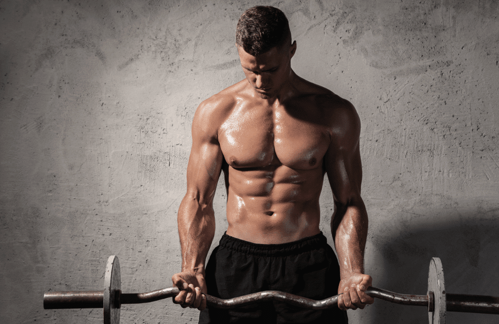
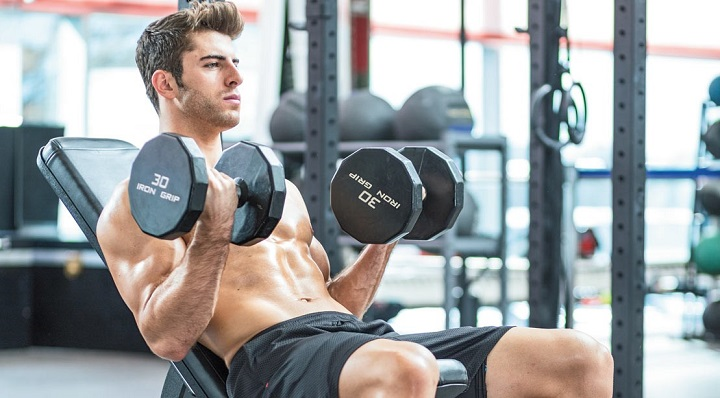
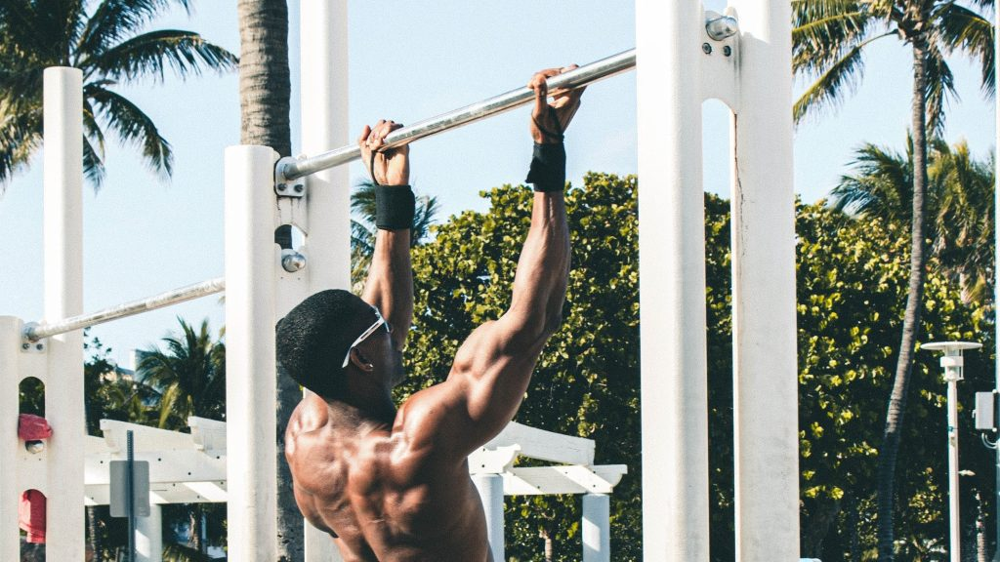
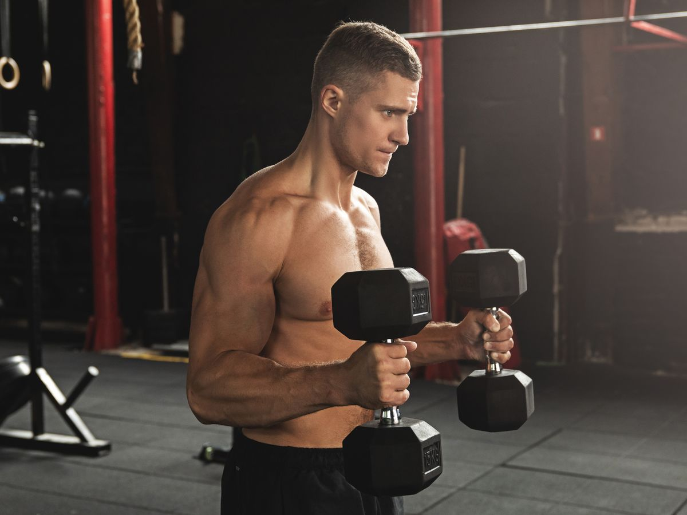

El bíceps, también conocido como bíceps braquial, es un músculo situado en la parte frontal del brazo y es uno de los músculos más visibles y conocidos del cuerpo humano. El bíceps consta de dos cabezas principales: la cabeza larga y la cabeza corta (En esta lista también incluiremos ejercicios para los braquiales). Este músculo se activa en una variedad de movimientos cotidianos que implican levantar objetos . Además, es un músculo crucial en el entrenamiento de fuerza para el desarrollo de los brazos.
Un clásico, el curl con barra es como el press banca de los bíceps en el que puedes agregar peso extra, este ejercicio es infalible para el desarrollo del bíceps braquial. Te recomiendo realizarlo con una "Barra Z", también puedes realizarlo con mancuernas "Curl con Mancuernas" para trabajar de forma unilateral aunque esto restará el peso que puedas levantar.
Una variante del Curl de Bíceps realizado en un banco inclinado a 45°, aproximadamente, pensado para un mayor estímulo en la cabeza larga del bíceps, que le da el pico o "altura" al bíceps, al llevar los brazos por detrás del cuerpo al realizar el ejercicio. Este al trabajarse al trabajarse con la espalda apoyada no permite trampas y enfoca el estímulo plenamente en los bíceps. Teniendo presente lo anterior mencionado, el curl inclinado es un ejercicio que no puede faltar en tu rutina, y para mí, aún más indispensable que el curl con barra.
Este ejercicio es una variante de las dominadas enfocado en los músculos del bíceps debido al agarre supino que se enfoca más el músculo en cuestión. Las Dominadas con Agarre Supino (Tambíen puedes hacer un jalón al pecho con agarre supino, es practicamente lo mismo) es el mejor ejercicio para los bíceps debido a su naturaleza que ocupa rango completo de movimiento, no tengo pruebas pero tampoco dudas. Enrealidad si tengo pruebas, varios estudios científicos corroboran lo anterior mencionado. Por todo esto lo considero un ejercicio que deberías incluir si o si en tu rutina de bíceps como base.
Esta variante bien conocida de Curl, esta pensada para estimular principalmente el braquial, un músculo muy importante para el tamaño del brazo. Consiste en un curl de bíceps tradicional con un agarre Neutro, te recomiendo realizarlo con mancuernas para más comodidad pero lo puedes realizar tambien con una "Barra Romana". Lo considero un ejercicio infaltable en tu rutina de bíceps.
